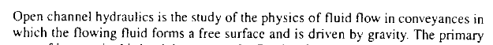

Basic Principles¶
Open channel flow - free surface, gravity driven.
From pg. 1 of Sturm, T. Open Channel Hydraulics, 1 st Ed.

Note
The gravity “drive” is mostly true - I would say such flows are dominated by momentum conditions, mostly with gravity influence. Open flow can go uphill (adverse to gravitational drive) but not for much distance (os one will run out of momentum)
Common examples of open channels:
rivers, streams, brooks, creeks, cricks (Applacian meaning small stream), billabongs, bourns, wadis, and many more localized terms for small streams
ditches, canals, aqueducts, storm sewers, sanitary sewers
From pg. 1 of Sturm, T. Open Channel Hydraulics, 1 st Ed.
Applications of open channel flow principles
Culvert design, bridge design, spillway design
Floodway analysis, and nusiance flooding prediction
Fate and transport of yummy/yucky stuff (dissolved and/or suspended)
Surge estimation and coastal flooding from cyclonic storms (hurricane,typhoon)
From pg. 1 of Sturm, T. Open Channel Hydraulics, 1 st Ed.

Characteristics of Open Channel Flow¶
Three important characteristics of open channels are
A free surface
Extremely variable cross section geometries
Inertia (momentum) and gravitational dominance on flow behavior reflected in the importance of the Froude number on predicting open channel behavior
Note
The Reynolds number still matters, just not as overarching as in closed conduit (pipe) flow
Free Surface¶
The free surface is an extra degree of freedom as compared to a conduit directed boundary; it is usually treatable as a streamline with constant pressure in equilibrium with the local atmosphere (i.e. \(p=0_{gage}\))
Cross Sections¶
The cross section geometries are remarkably variable, but usually can be reduced to a few terms including:
\(T\) the topwidth, a function of cross section geometry and depth (above the thalweg reference elevation)
\(A\) the flow area, a function of cross section geometry and depth (above the thalweg reference elevation). Shown as the magenta shading in the drawing.
\(P\) the wetted perimeter, which is the length of the liquid-solid contact curve. Also a function of cross section geometry and depth (above the thalweg reference elevation)
\(y\) the flow depth, ususlly measured from the local minimum elevation in the channel. The locus of these minima in the longitudinal direction (downstream) forms a curve called the thalweg. The term derives from the German talweg whose literal translation is valley path.
A sketch depicting some of the common terms is
Some additional terms in common application are:
\(R_H\) the hydraulic radius; the ratio of area to wetter perimeter
\(D_H\) the hydraulic depth; the ratio of area to topwidth
Flow Resistance¶
Flow resistance is acombination of frictional shear at the liquid-solid boundary, as well as form resistance from various “roughness” components (even bridge piers can be grouped into this term) that are collectively modeled in practice as a single term that plays the same role that shear does in Euler’s equation when we discuss viscous flow.
Froude Number¶
The most important dimensionless parameter in open channel flow is the Froude number:
where \(V\) is the mean section velocity (speed), and \(L\) is a characteristic length scale related to depth. \(Fr\) is the ratio of inertia to gravity forces.